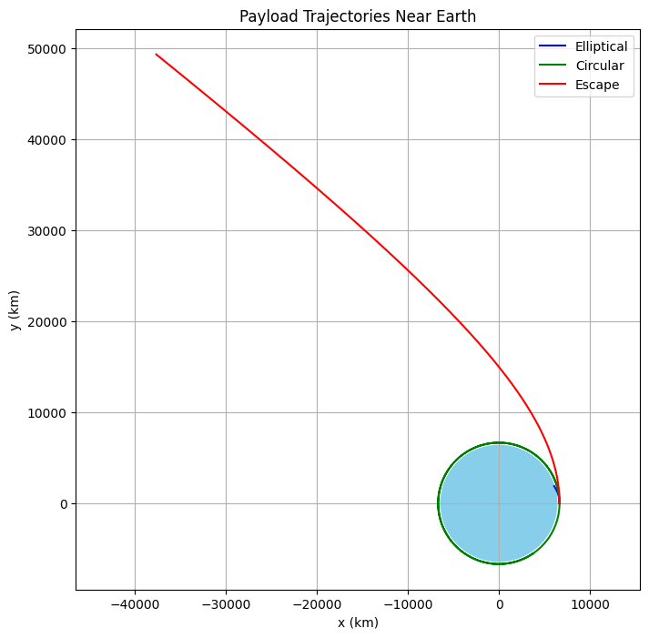

Problem 3
🚀 Trajectories of a Freely Released Payload Near Earth
📘 Motivation
In spaceflight, releasing a payload from a rocket requires a precise understanding of how gravity and initial conditions affect its motion. Depending on speed and direction, the object could:
- Reenter Earth's atmosphere (suborbital)
- Enter orbit (elliptical or circular)
- Escape Earth's gravity (hyperbolic trajectory)
This study uses numerical methods and gravitational physics to analyze these possibilities.
🧪 Task Breakdown
1. 🌠Fundamental Physics
We’ll model motion using:
- Newton’s Law of Gravitation:
$$ F = \frac{GMm}{r^2} $$ * Newton’s Second Law:
$$ \vec{a} = -\frac{GM}{r^3} \vec{r} $$
Where:
- \(G = 6.674 \times 10^{-11} \, \text{Nm}^2/\text{kg}^2\)
- \(M = 5.972 \times 10^{24} \, \text{kg}\) (Earth's mass)
- \(R = 6371 \times 10^3 \, \text{m}\) (Earth's radius)
2. 🧮 Numerical Simulation
We’ll use the Euler or Runge-Kutta method to simulate the trajectory.
Example setup:
import numpy as np
import matplotlib.pyplot as plt
# Constants
G = 6.67430e-11 # gravitational constant (m^3 kg^-1 s^-2)
M = 5.972e24 # mass of Earth (kg)
R_earth = 6.371e6 # radius of Earth (m)
# Function to compute gravitational acceleration
def gravity_acc(r):
norm_r = np.linalg.norm(r)
return -G * M * r / norm_r**3
# Function to simulate trajectory using RK4 method
def simulate_trajectory(r0, v0, dt=1, T=10000):
N = int(T / dt)
r = np.zeros((N, 2))
v = np.zeros((N, 2))
r[0] = r0
v[0] = v0
for i in range(1, N):
a1 = gravity_acc(r[i-1])
k1r = v[i-1] * dt
k1v = a1 * dt
a2 = gravity_acc(r[i-1] + 0.5 * k1r)
k2r = (v[i-1] + 0.5 * k1v) * dt
k2v = a2 * dt
a3 = gravity_acc(r[i-1] + 0.5 * k2r)
k3r = (v[i-1] + 0.5 * k2v) * dt
k3v = a3 * dt
a4 = gravity_acc(r[i-1] + k3r)
k4r = (v[i-1] + k3v) * dt
k4v = a4 * dt
r[i] = r[i-1] + (k1r + 2*k2r + 2*k3r + k4r) / 6
v[i] = v[i-1] + (k1v + 2*k2v + 2*k3v + k4v) / 6
if np.linalg.norm(r[i]) < R_earth:
r[i:] = np.nan # terminate on reentry
break
return r
# Initial altitude and position
altitude = 800e3 # 800 km above Earth's surface
r0 = np.array([R_earth + altitude, 0]) # starting to the right of Earth center
# Initial speeds in m/s (from 5 km/s to 13 km/s)
initial_speeds = np.arange(5000, 13500, 500)
colors = plt.cm.viridis(np.linspace(0, 1, len(initial_speeds)))
# Plot setup
plt.figure(figsize=(10, 10))
for v, color in zip(initial_speeds, colors):
v0 = np.array([0, v]) # launch straight up from surface tangent
trajectory = simulate_trajectory(r0, v0, dt=1, T=20000)
plt.plot(trajectory[:, 0] / 1e3, trajectory[:, 1] / 1e3, label=f'{v/1e3:.1f} km/s', color=color)
# Draw Earth
earth = plt.Circle((0, 0), R_earth / 1e3, color='skyblue', label='Earth')
plt.gca().add_patch(earth)
# Plot formatting
plt.xlabel("x position (km)")
plt.ylabel("y position (km)")
plt.title("Trajectories of Payloads Released at 800 km Altitude")
plt.axis('equal')
plt.grid(True)
plt.legend(title="Initial Speed")
plt.tight_layout()
plt.show()
3. 🔠Sample Trajectories
We simulate different scenarios:
- Circular Orbit: \(v = \sqrt{GM/r}\)
- Elliptical: \(0.7 \times v_{circ}\)
- Escape: \(v > \sqrt{2GM/r}\)
altitude = 300e3 # 300 km above Earth
r0 = np.array([R_earth + altitude, 0])
v_circular = np.sqrt(G * M / np.linalg.norm(r0))
velocities = [
0.7 * v_circular, # elliptical
1.0 * v_circular, # circular
1.5 * v_circular, # hyperbolic/escape
]
colors = ['blue', 'green', 'red']
labels = ['Elliptical', 'Circular', 'Escape']
plt.figure(figsize=(8, 8))
for v, c, label in zip(velocities, colors, labels):
traj = simulate_trajectory(r0, [0, v])
plt.plot(traj[:,0]/1e3, traj[:,1]/1e3, label=label, color=c)
# Plot Earth
earth = plt.Circle((0, 0), R_earth/1e3, color='skyblue')
plt.gca().add_artist(earth)
plt.xlabel("x (km)")
plt.ylabel("y (km)")
plt.axis("equal")
plt.legend()
plt.title("Payload Trajectories Near Earth")
plt.grid(True)
plt.show()

4. 🛰️ Interpretation
🌀 Elliptical Orbits
- Result from speeds below escape velocity but above reentry thresholds.
- May decay into reentry if atmospheric drag is added (can be an extension).
🌠Circular Orbit
- Stable condition when orbital speed equals centripetal requirement.
🚀 Escape Trajectory
- Speed above escape velocity (11.2 km/s near Earth's surface).
- Payload leaves Earth’s gravitational influence.
5. 🌠Real-World Applications
| Application | Use of Trajectory Modeling |
|---|---|
| Satellite Deployment | Ensure stable orbits |
| Reentry Planning | Target specific regions |
| Interplanetary Missions | Reach transfer orbits (e.g., Hohmann) |
| Space Tourism | Suborbital path predictions |